Why keda
누구나 AI로 만드는 시대,
변별력은 AI스럽지 않음에서 나옵니다.
캐다 대표는 디자이너 출신입니다. AI가 금방 만들어 주는 '그럴듯함'과, 브랜드에 맞게 설계된 디자인은 한눈에 다릅니다.
10년+디자인 · 브랜딩 실무
* 왼쪽은 AI 도구로 흔히 나오는 결과물을 재현한 예시입니다.

카드를 치워 보세요 · drag & dig
Why keda
캐다 대표는 디자이너 출신입니다. AI가 금방 만들어 주는 '그럴듯함'과, 브랜드에 맞게 설계된 디자인은 한눈에 다릅니다.
* 왼쪽은 AI 도구로 흔히 나오는 결과물을 재현한 예시입니다.
브랜드의 가치는 이미 거기 있습니다.
다만 보이지 않을 뿐.
캐다는 그걸 찾아서, 꺼내고, 닦습니다.